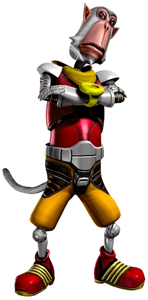

Led by the treacherous Wolf O' Donnell, Star Wolf is a gang of mercenaries, comprised of some of the most fearsome pilots in the Lylat System...
Star Wolf is a group of antagonistic mercenaries led by Wolf O'Donnell, with his wingmen Leon Powalski, Pigma Dengar, and Andrew Oikonny. They were originally employed, equipped and associated with the evil Emperor Andross, and cemented themselves as rivals of the Star Fox team. In contrast to Star Fox's motivations for justice and freedom, Star Wolf tends to make a living by dabbling in illegal activities such as larceny and smuggling, gaining fearsome reputations and having massive bounties placed on their heads because of their work. Their main ship of choice is the Wolfen, one of the few starfighters in the Lylat System which can rival (in some cases surpass) the Star Fox team's Arwings. After Andross’ defeat, Pigma & Oikonny were kicked out of Star Wolf, which led to the recruitment of Panther Caroso, who now flies in their place.

ENA